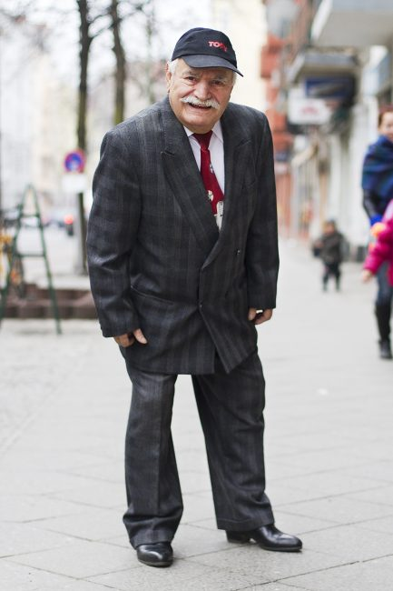
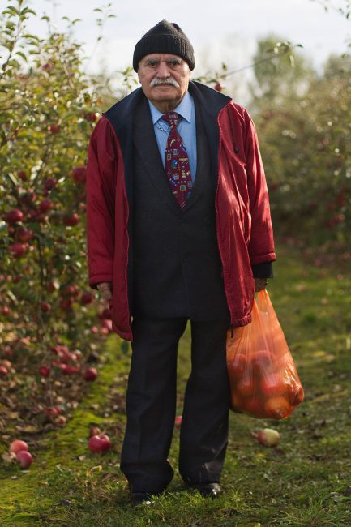

Interview: Ali, Zoe, and the Gentrification Debate
Meet Ali and Zoe.
{kind=link}
You may have heard of them. Zoe takes pictures of Ali while walking down the street and posts them on her tumblr called What Ali Wore.
Her project has seen no shortage of attention. A few articles in local and national German media, even some pieces by CNN and a Turkish daily, and her followers went from 29 to more than 24,000. The trend of street style seems to catch the most attention; his outfits boast the irony of cosmopolitan contrasts: youthful pastels with a grayed moustache, prayer beads and a baseball cap, Kebab and a double-breasted plaid suit. Designers have even offered to send her clothing for Ali, she tells me – to dress Ali like a mannequin for a show. She declined, of course, she says a bit perturbed.
This is not just a fashion blog glorifying fabrics or cuts. A person and experience – positioned in the city and its landscape – exists behind the camera, behind Ali’s swagger. What beauty are we missing if we consider images simply for what they are, a blend of red polyester against a backdrop of hipsterdom? This is about Ali and Zoe and their well-timed collision. And it’s about gentrification. Most importantly, it’s about friendship.
Let’s start from the beginning.
Zoe met Ali last summer while setting up furniture outside the Café where she works on Panierstraße, nestled in the booming heart of the Neukölln district. The scene is rough streets meet Williamsburg ten years ago. And ‘rough’ being the Berlin variety which is, well, mild. Like its American counterpart in Brooklyn, we discuss how the Café where she works and its environs have been the brunt of jokes, even legitimate public attack, as of late. Affluent expats, usually English-speaking, move in to transform the neighborhood with their record stores and crumpet Cafés, so goes the rhetoric, destroying tradition-culture-nostalgia-rent ceilings-jobs-diversity-etc. with one swift move of the fixie. She mentions a few articles and videos, ones that also rush into my memory, clips or commentaries which chastise us (expats or the “new immigrants”) for simply coming and changing whatever it was that our clans were able to so rapidly and singularly change.
We talk about this gentrification discourse, how it somehow makes Ausländerfeindlichkeit (xenophobia) easier to stomach as just being Anti-Gentrifizierung, how it makes it ok to spit on those speaking English on the street or to hurl beer bottles from a moving car to those “talking American”. These events are close to both of us. They confound the destructive, unspoken impact of the anti-gentrification debate – the blame game that oversimplifies a capitalistic market to one facet of consumers. It is a game that assumes to know everyone’s reason for coming, for staying, and for interacting with the “locals”.
Animosity and stereotypes lead to fear, she tells me. Many businesses known to belong to expats in this part of Neukölln had been broken into around this time last year, windows smashed, even her café had been victim to minor altercations. But it is the fear, not the break-ins, that creates the most problems: businesses owners labeled as “gentrifying expats” and nothing more feel pushed into a particular identity straight-jacket. Many people began to blame the local [Turkish] community for the break-ins, she says. This was just another group backed into a corner, youth without much to do, let alone an identity that did not come pre-packaged with a caution sign on one’s ID card. She knows how it feels, being put into a certain box. We all do.
Then one day, Ali walked by.
And it just happened organically, she says. She noticed his well-put together outfits and slight swagger, asked to take his picture. Now it is a regular occurrence, though he prefers to have his picture taken only on days when he is looking snazzy…which are most days, it seems. He never leaves the house without an accessory – whether a jacket slung over the shoulder or colorful prayer beads, it represents his attitude, she says. He even began to lean his shoulder back a bit in some of the photographs, working on his pose, she adds with a grin.
{kind=link}
There was probably a bit of intention in the first interaction, I add, a connection you two shared from the start just by nature of position. He, the assumed-Gastarbeiter (politically-charged term for ‘guest worker’) fighting against stereotypes and categorizations since arrival // she, the ex-pat fighting off armies of criticism for displacing the very people one considers to be neighbors: difficult situations that have arisen not out of malice but out of circumstance, no matter the scale. She nods in agreement.
What began without much planning progressed effortlessly. As it turns out, they have a lot in common.
Exhibit A: a tenuous relationship to the German language. My German is getting better because of Ali, she mentions enthusiastically. She has continued to learn German slowly via Rosetta Stone, considering it a victory when she and Ali can communicate without too many halted sentences. We can just communicate on basic terms, though he simplifies it down for me. She laughs. But I can pick out key words and we understand each other. A journalist asked Zoe if Ali could speak any German. The woman was surprised that he could, for his generation, at least. He speaks German at a professional level in the shop, but he enjoys the practice with me too, she adds with a smile.
There are other similarities between the two, ones that the papers also aren’t writing about. Ali used to be a doctor in Turkey. He came to Germany as a young man seeking a better life 44 years ago – Ali is 84 years old – but found himself struggling amidst Germany’s incredibly strict immigration laws, which prevent the recognition of many accreditations achieved abroad (let alone their application in the job market). He was left an immigrant, a father – Ali has 18 children to date – without the ability to practice his profession or identity for that matter.
He learned the trade of tailoring, turning his white coat in for a pair of scissors. The bags seen in many of Zoe’s photos often contain his special tools, as he walks to work from his home in Neukölln. I want to know why he didn’t go back, why he stayed, she says. It is a struggle to stay, we both add. Working at a café is a step down, she explains, as she can’t afford the freelance insurance for personal reasons. No one knows your story. They just make assumptions based on where they think you are from. This cuts to the heart of the gentrification debate: assumptions without asking questions. And deciding to stay is a constant negotiation, I add, a constant weighing of pro’s, con’s, and dreams, even the dreams that can’t happen here.
{kind=link}
Ali opens up so many doors to new experiences and opportunities, she says. Every time he sees me, he gives me a gift. This is how they first went to the apple orchards together – Ali had brought delicious apples into the Café for her; she inquired about their origin. Days later they were in the car heading to some distant field beyond Berlin to fill sacks with autumn’s fruit. She’s even attended a wedding with Ali, introduced her mother who was visiting from Australia. She often swings by his shop in the afternoons or meets him for lunch.
But it can’t all be apple-picking and weddings, and looming at the end of our uplifting and yet slightly sad conversation is the theme of our encounter: gentrification. It is a problem, she reiterates, but pointing fingers at ad hoc identities without asking bigger questions isn’t finding a solution, either. It occurs to me that such encounters – like the one between Ali and Zoe – aren’t happenstance, that even friendships between unlikely matches develop in such spaces of change and even crisis like this corner of Neukölln, especially in a city that has only known flux and adaptation to the times. Reaching out to each other in positions of out-of-placeness and marginality is more common place than we might think. These collisions are what keep us sane, humane, and humble. They prevent slight fissures from turning into chasms, allowing us to keep picking dem apples with neighbors quite different from our own biography.
Ali and Zoe are going strawberry-picking this month. Zoe thought she would leave Berlin this spring. She’s staying a while longer, developing her friendship with Ali, and working on her photography. For now.
-By Kelly Miller
All images of Ali were taken from Zoe’s fantastic tumblr What Ali Wore. Check out the rest of her gorgeous photography on her personal website! Mostly food and restaurant scenery, a visit will definitely make you hungry and equally envious.
I like the story but it doesnt seem like real problems of gentrification were discussed….meaning unless its the exact same as seattle i dont know what it means in/for berlin
You are absolutely right, Mira. I wanted it to be more an example of interaction within a discourse (which often rules such encounters out, or at least in an authentic sense), rather than an article about the political or economic side of the debate, which is complicated and heavily layered, at best. Suffice it to say, there is a lot of misunderstanding and a tendency to generalize located on both sides. I wanted to avoid doing the same, and of course, be transparent in my own position as one of these criticized English-speakers. Thanks for the feedback 🙂 This is, in the end, what it’s all about!